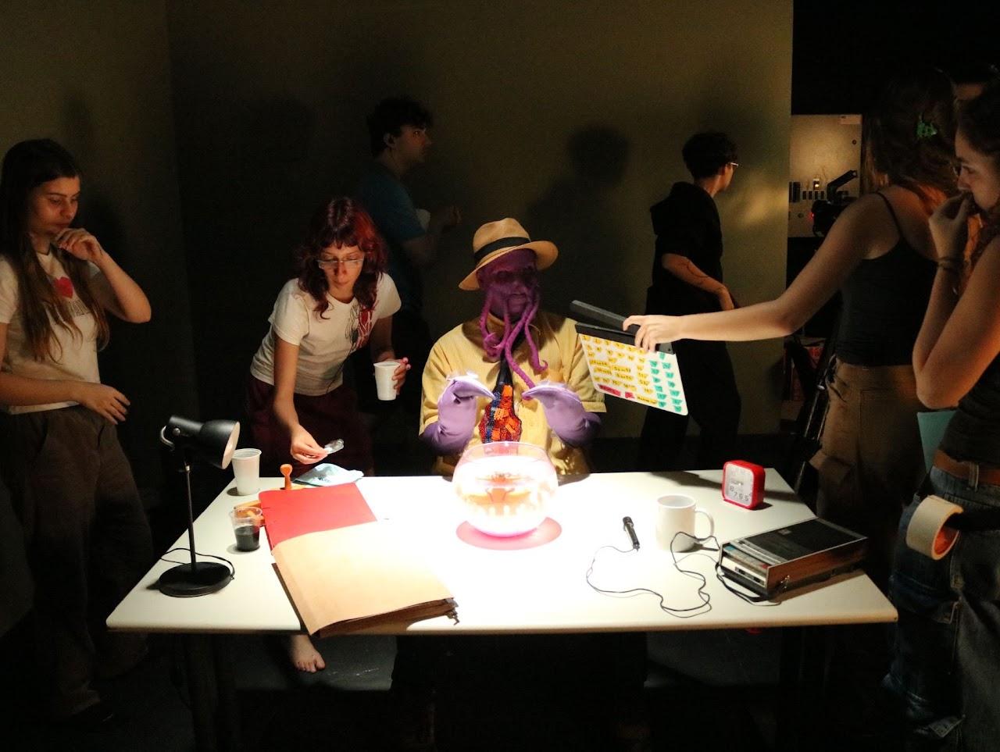
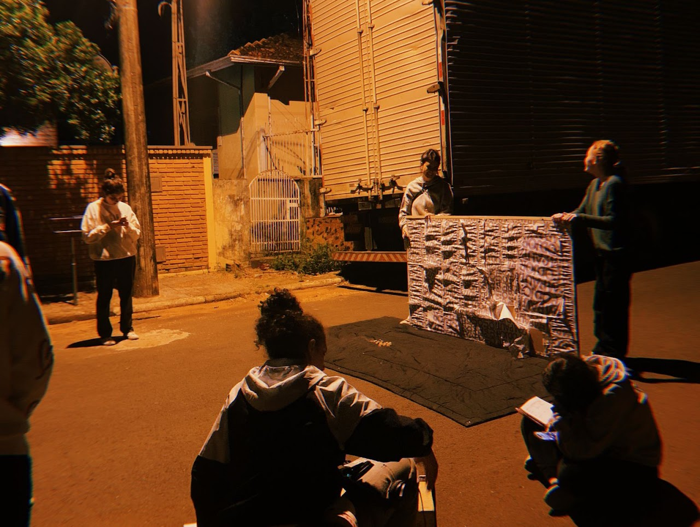
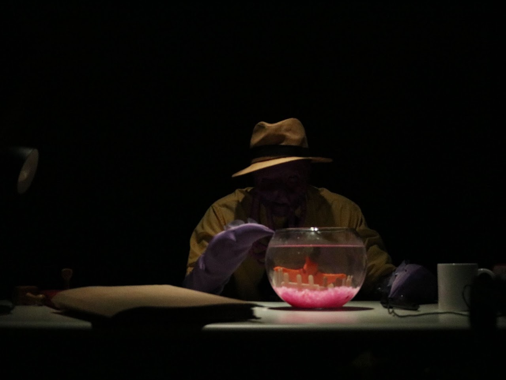
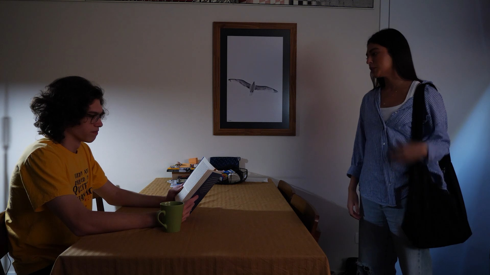
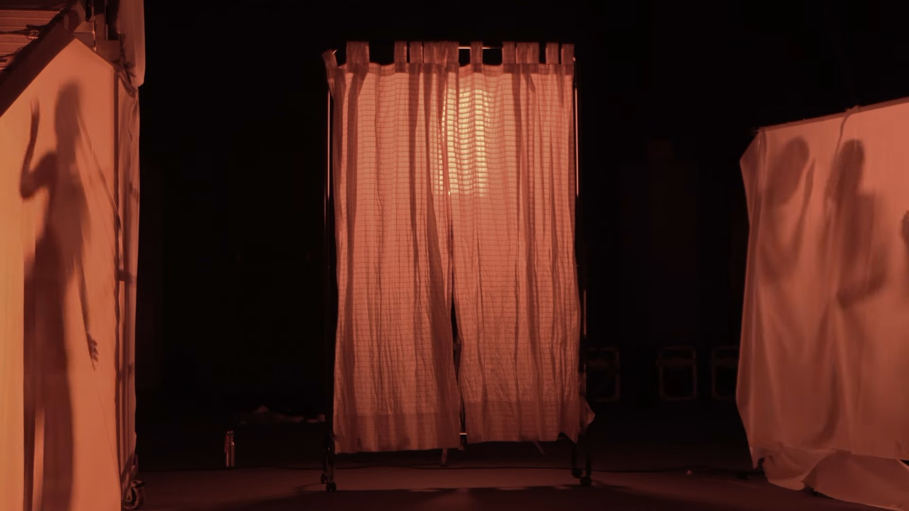
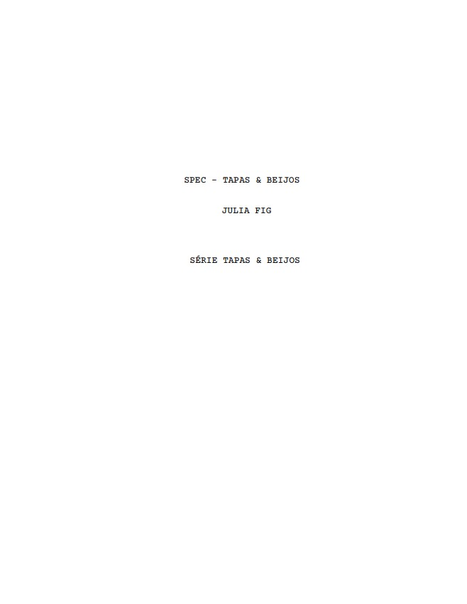

01

CANTO V
DIREÇÃO DE PRODUÇÃOCurta de formação do 3° semestre do curso de cinema da FAAP
Cinema · Produção · Audiovisual
Entre um take e outro existe uma vida a ser vivida e uma história a ser contada
Imagem de destaque
em breve
Projetos organizados pelas diferentes áreas de atuação da Julia.
Exibindo todos os trabalhos
DIREÇÃO DE PRODUÇÃOCurta de formação do 3° semestre do curso de cinema da FAAP


DIREÇÃO DE FOTO Curta de formação do 4° semestre do curso de cinema da FAAP
Conhecer projeto ↗


Registros de fotografia do backstage, durante a produção do curta-metragem
Conhecer projeto ↗
Registros de fotografia do backstage, durante a produção do curta-metragem
Conhecer projeto ↗
Registros de fotografia do backstage, durante a produção dos curta-metragem
Conhecer projeto ↗



Editora de vídeo no projeto "Aquela Que Brilha, Luciara".
Conhecer projeto ↗




02 — Sobre
Julia Marques Figueirôa, nascida em 2003, é estudante de Cinema na Fundação Armando Alvares Penteado (FAAP). Este espaço reúne sua trajetória, seus projetos e as diferentes funções que experimenta dentro de uma produção audiovisual. Profissional em capturar e eternalizar momentos passageiros.
Próxima produção